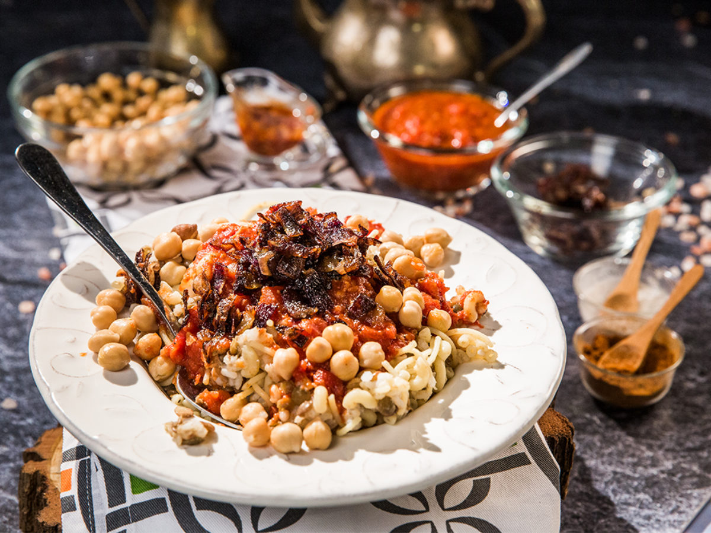

Koshary

Koshari is Egypt's national dish, a popular vegetarian street food made from layers of rice, lentils, and pasta, topped with chickpeas, a zesty tomato sauce, and crispy fried onions.
It's a hearty and flavorful dish with a mix of textures, and is often considered a complete meal on its own.
Foul and ta3meya

Egyptian foul, or ful medames, is a popular dish of cooked fava beans, considered Egypt's national dish and a staple breakfast food.
It is a hearty, flavorful stew often made by mashing or mashing some of the beans and topping them with olive oil, garlic, lemon juice, and spices like cumin, along with other optional additions like tomatoes, parsley, onions, or tahini.